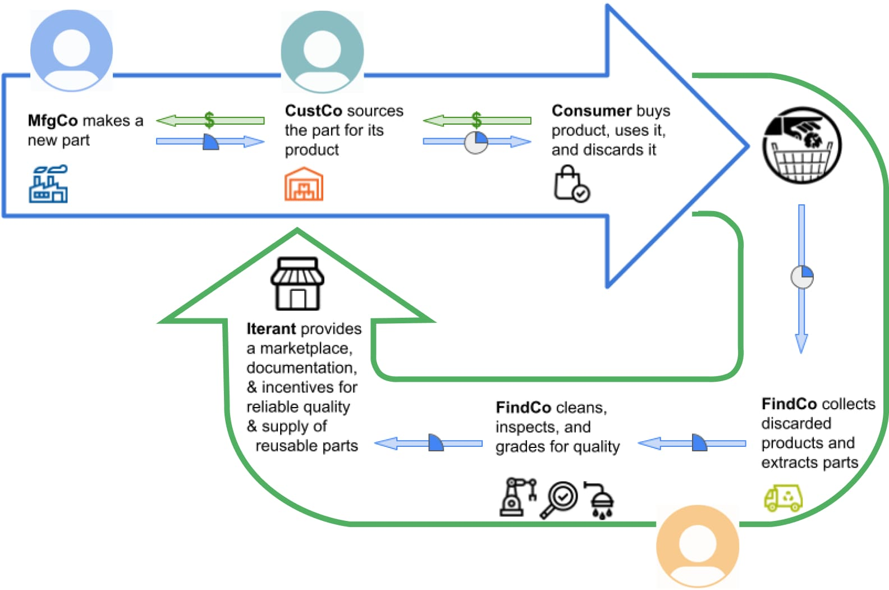

| Project: | Circular Economy • Sustainability • Web App |
| Scope: | Strategy • Research • Design |
| Roles: |
|
| Tools: | Figma • Loom • Google Docs |
| Year: | 2021-2022 |
Iterant is a three-sided online marketplace platform (PaaS) powering the circular economy by furnishing its users with incentives that:
I helped the team visualize what the circular marketplace would look like with its unique incentive-based features. The wireframes and prototypes I provided facilitated strategy discussions, helped successfully raise a first seed round of funding, and secured entry to Berkeley SkyDeck, a startup incubator.
I worked with the founder to help visualize the convergence of manufacturing, supply chain, and recovery channels to build an ecosystem of reuse.
Being involved at such an early stage, I served as a sounding board for the founder’s evolving business concept and reflected back to help hone the value proposition.
Each of the three channels of commerce (manufacturing, supply chain, and recovery) involved a unique end-user with unique concerns and motivations.
Through online research and 1:1 interviews, I familiarized myself with two roles that exist in today’s manufacturing ecosystem: Inside Sales and Supply Chain Management. The third more novel role of “Collector” required some imagination: What are current mainstream roles that are similar? How might these adjacent roles adapt for the circular economy, and what incentives can motivate change given each end-user's respective goals?
From boxes and arrows, to wireframes, to low-fi prototypes, I created artifacts to facilitate discussion and collaboratively refine the evolving concept to:
Iterant
Matthew Sensky, Founder/CEO
User Experience
Nilpa Jhaveri, Consulting Designer
Advisor
Todd Fulton, Consulting Engineer